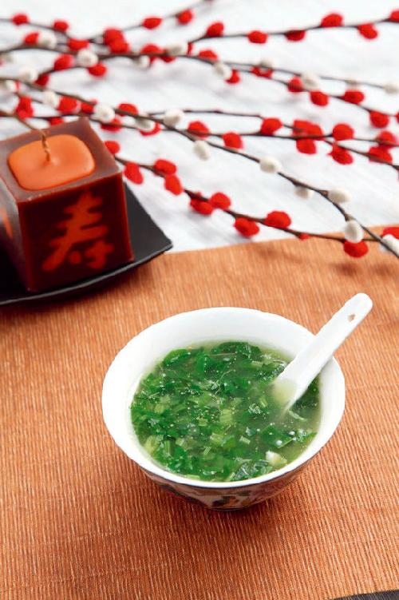
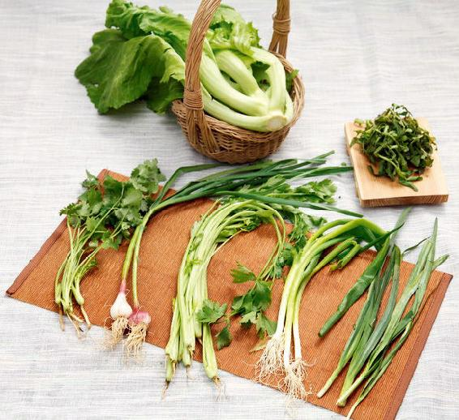
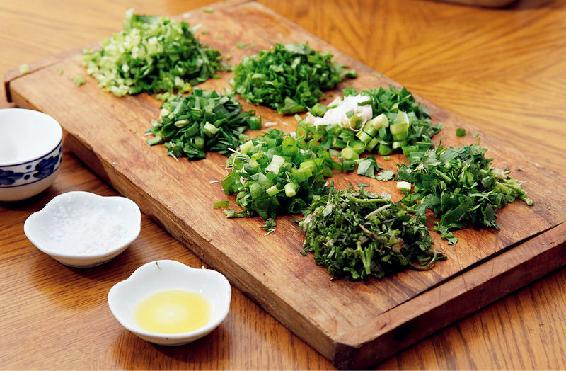
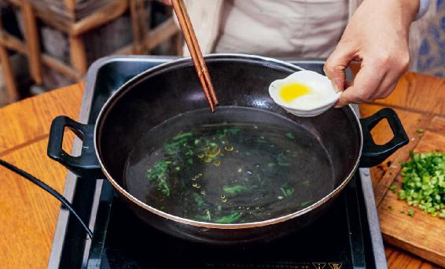
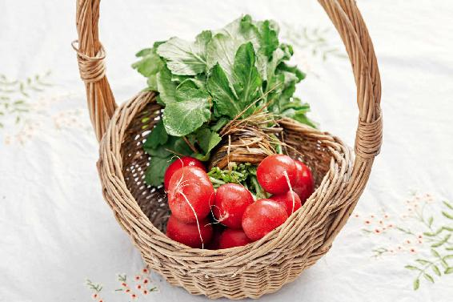

大年初七是“人节“，又称“人日”。人日就是人类的生日，是中国的一个很重要的传统节日。传说女娲创造苍生，按顺序造出了鸡、狗、猪、羊、牛、马、人等。因为人是第七天造出的，所以初七为人类的生日。
古人写道：“只从元日到人日，便觉新年胜故年。买酒买符酬旧社，宜蚕宜麦祝新田。”这是非常喜庆的感觉了。
元日到人日，也就是初一到初七，如果过得非常顺利、非常好，人们就会感觉到新的一年比过去的一年更好，也就是“新年胜故年。”
在人日这一天，我们要喝七菜羹祈愿健康长寿。
七菜羹，古人也把它叫作“七宝羹”，它至少有1600年的历史了。
七菜羹的“羹”，也用来表示“更”，就是更替。元日（大年初一）的时候，万象更新；到了人日（初七）人事更新，从这天开始，才正式进入新的一年，重新回到了柴米油盐的人间生活中。
您可以从以下蔬菜中任选七种，包括芹菜、荠菜、芥菜、韭菜、香菜、蒜苗、小葱、繁缕、蔓菁、油菜薹、萝卜缨。其中，蔓菁（南方地区比较多，河北也有），有的地方叫蔓菁，有的地方叫芜菁；繁缕是一种野菜，在南方地区可以找到，找不到也没关系，您用其他蔬菜来代替就可以了。
七菜羹做好后，您早上、中午或者晚上什么时间喝都是可以的。
还可以按同样的方法把七种菜煮到粥里（去掉勾芡的步骤），这样就叫七宝粥，也是很美味的。七菜羹/七宝粥的功效：生发阳气、疏散风热、清肠排毒。
读者评论：感觉整个人轻松多了
木子梨1：这几天一直在喝七菜羹，感觉整个人轻松多了。
五柳先生_qh：陈老师，我晚上回来做了七菜羹。现在菜不好买，只买到了芹菜、香菜、蒜苗、红菜薹、小葱。做了满满一大锅，出锅一闻真是香，每人喝了一大碗。喝完后全身发热，过完年喝一碗七菜羹真舒服。
玉兔_vu：第一次喝七菜羮，虽然很清淡，但是味道还是蛮不错的，谢谢老师！
一根葱_3s：我家只买到了五种菜，找不到荠菜等。这个汤喝完几小时后，肠胃排气很通畅，舒服。
春意阑珊：从立春开始就吃七菜羹，效果非常好，吃多少肉都不觉得上火，早上起来也几乎没有痰了。
梅：最近常吃七菜羹，菜市场里别人不要的萝卜缨我都捡回家做七菜羹。每次喝完七菜羹就感觉肚子很舒服，太感谢陈老师了。
Donna：2018年整个春天都在吃七菜羹，喝玫瑰花茶，脾胃和肝真的是舒服得不得了，能感受到气息生发顺畅，胃也不胀了，脾气也不急躁了。

七菜羹

原料：芹菜、荠菜、芥菜、韭菜、香菜、蒜苗、小葱、繁缕、蔓菁、油菜薹、萝卜缨。（任选七种）

做法：
1. 锅里加水烧开，放一点点油（植物油或者动物油都可以）和盐。

2. 把蔬菜切碎，放入锅中，大火煮熟（因为蔬菜都切碎了，用大火沸腾一下就熟了），勾芡（可以勾得薄一点），这样菜汤会更加有味。关火出锅就可以了。
有一位读者问：“吃七菜羹可以缓解咳嗽吗？我从去年咳嗽到现在，喝了七菜羹后感觉好多了。”
其实，这种咳嗽可能跟肠胃积滞有关系，七菜羹有通肠胃的作用，喝了以后对咳嗽会有一点帮助。我建议您在做七菜羹时挑选辛味比较浓的菜，比如萝卜缨，它对于缓解咳嗽是很有帮助的。
其实，喝七菜羹是为了在立春时节排出体内的浊气，生发人体的阳气，所以您在选蔬菜的时候，要注意以下三点。
早春自然生长的蔬菜，它的生命力特别旺盛，有利于生发人体的阳气，特别是早春新长出来的这批菜，大多都是宿根（去年的根）的。冬天的时候，由于营养都回流到了根部，经过一个冬天的滋养，在早春发芽、生长，它是既得了冬气，又得了春气，是营养最丰富的一批菜。比如萝卜缨，萝卜缨就是去年的根，今年发了芽。再比如韭菜，韭菜也是宿根植物，早春的第一批韭菜也是去年的根发出来的。

辛味的菜，就是带有一点辛香、辛辣味的菜，这些辛味能帮我们的身体疏散风热。
立春后，虽然气温可能还跟冬天一样，但自然界的气候已经在悄悄发生变化了。此后，我们就要开始预防春季的风热病和病毒性传染病了，而辛味的蔬菜就有散风热、抗病毒的作用。
如果您在南方地区，那您不妨出去找一找新长出来的野菜。这个时候新长出来的野菜也是有宿根的，也就是说，去年的根在地里埋藏了一年，现在得到了春天的阳气，就往上生长、发芽，这样的野菜排毒效果更好，比如荠菜、繁缕。如果能找到，加一点在七菜羹里效果会更好。
北方的朋友可能感觉这个时节不容易找齐这些菜，那就用一些能找到的菜来代替。没有萝卜缨可用萝卜（带皮），没有小葱可以用大葱叶。
我在北京过年，只要自己动手，也有应季菜可以做七菜羹。北方封闭的阳台就像个小温室，天再冷也能自己发点小葱、麦芽和蒜苗。花盆里往往还能找到不请自来的野草——繁缕，立春后长得更是茂盛，放少许在七菜羹里，有清热利咽的作用。
其实，凑不齐七种菜也没有关系。七菜也好，五菜也好，甚至三菜、一菜都可以，您可以根据现有的条件选择。
有一位读者留言说得很好：“今天菜不好买，我只用到了五样，满满一大锅，出锅一闻也真是香。家人每人喝了一大碗，都说好吃，吃完以后全身发热，觉得过完年吃一碗七菜羹真舒服。”
其实，五菜羹的效果也是很好的，而且这位朋友用的是芹菜、香菜、蒜苗、红菜薹、小葱，这几样是市场上很容易买到的菜。
还有朋友留言说：“喝了以后觉得肠胃排气很通畅、舒服，感觉清清爽爽的。之前总是觉得肚子里有气，想排又排不出去，现在觉得好多了。”
这都是因为七菜羹、五辛盘里的菜带有辛香味，有通气的作用，在春天的时候吃它们会让身体的气血流动起来。这是我们吃七菜羹和五辛盘的一个目的。只要是辛香味道的菜，都可以达到这种效果。至于您能凑齐几样，都是没有关系的。
这些辛味很重的菜，大家可能会想象它们放在一起的味道不好接受，其实，煮出来的味道是您意想不到地清香。
“我喝到了春天的味道。”一位朋友喝了七菜羹后这样说道。这句话说得特别好，七菜羹也好，五辛盘也好，只要是早春的应季蔬菜，它们就会带有春天的味道。无论您在南方还是北方，在东部还是西部，只要有心，总能找到这些带有春天味道的菜。
如果您之前错过了也不要紧，后面还有将近两个月的时间，您还可以从容地来准备。
读者评论：春盘菜好吃，排毒又抗病毒
香蕉奶昔派：吃了好几天的春盘菜，好吃，排毒又抗病毒。谢谢老师！
允斌解惑：一岁半的孩子能吃五辛盘吗？
雪绒花：老师，外孙女一岁半，能吃五辛盘吗？
允斌：只要能吃青菜就可以吃五辛盘。
SoSo♥燕儿：陈老师，可以用五辛盘的菜下火锅吃吗？
允斌：是个好主意。